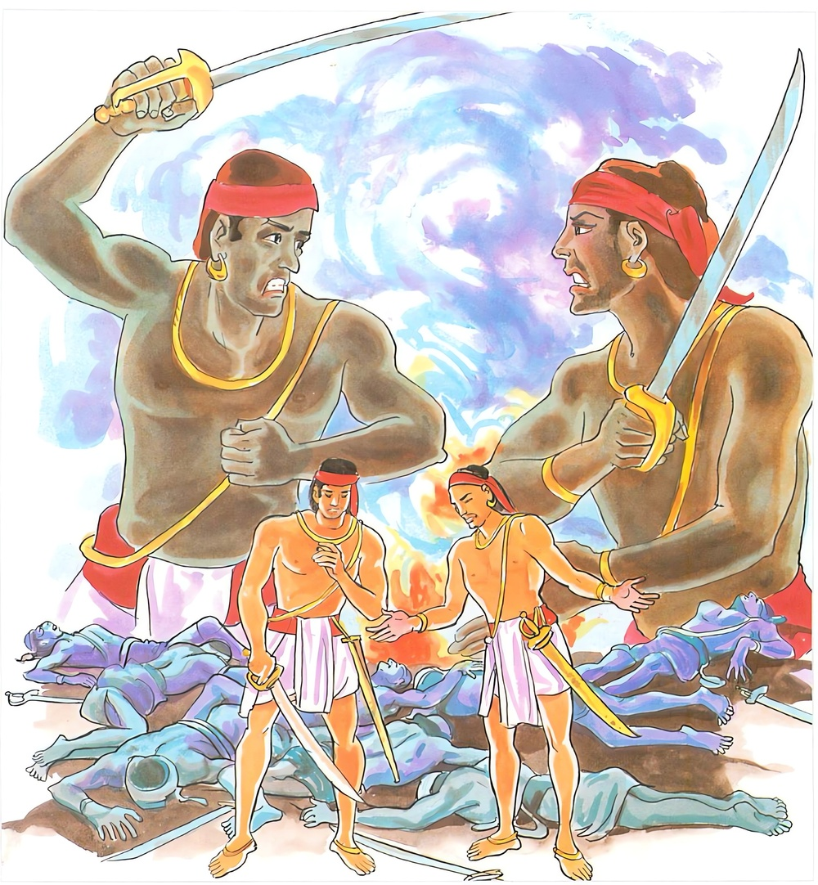

1-5 පස්වන කෝසම්බක වස්තුවයි.
මෙම කතාව සද්ධර්ම සාගරයෙන් ද කියවන්න.
පරෙ ච න විජානන්ති මයමෙත්ථ යමාමසෙ
යෙ ච තත්ථ විජානන්ති තතො සම්මන්ති මෙධගා.
‘මේ කලහයෙහිදී අපි නැසෙමු’ යී කලහකාරී අන්යයෝ නො දන්නාහ. එහි යම් කෙනෙක් ‘අපි නැසෙමු’ යී දනිත් ද එයින් කලහයෝ සංහිඳෙත්.

‘පරෙ ච න විජානන්ති’ ආදි මේ ධර්මදේශනාව බුදුන් දෙව්රම වැඩසිටි කාලයක කොසඹෑ නුවර භික්ෂූන් අරහයා දේශනා කරන ලදි.
කොසඹෑ නුවර ඝොෂිතාරාමයෙහි පන්සියය බැගින් පිරිවර ඇති විනයධර, ධම්මකථික නමින් ප්රකට භික්ෂු දෙනමක් වැඩ සිටියහ. දිනක් ධම්මකථික භික්ෂුනම ශරීරකෘත්ය කොට, පාවිච්චි කළ ජලයෙන් ඉතිරි කොටස එම භාජනයෙහිම තියෙද්දී නික්ම ගියේය. පසුව විනයධරනම වැසිකිළියට අවුත් ඒ ඉතිරිකොට ගිය ජලය දැක පිටතට අවුත් අනිත් භික්ෂුන්ගෙන් ඇවැත්නි, මෙයින් ඇවතක් වරදක් සිදුවන බව නොදන්නෙහිද? එසේය නොදන්නෙමි. ඇවැත්නි, මෙහි වරදක් ඇත. එසේ නම් ඊට පිළියම් කරන්නෙමියි ඒ නම කීවේය. ඇවැත්නි, එසේවුවත් ඔබ මෙය නොදැන අසිහියෙන් කෙළේ නම් ඇවතක් නැතැයි විනයධරනම කීවේය. ධම්මකථික නම එහි ඇවතක් නැත යන කල්පනාව ඇතිකර ගත්තේය.
විනයධර නම තමන්ගේ ඇසුරෙහි හුන් අයට, මේ ධම්මකථික තෙමේ ඇවතකට පැමිණත් නොදන්නෙමියි දැන්වීයයි කීය. ඒ පිරිස ධම්මකථිකගේ පිරිස මැද ඔබලාගේ උපධ්යායයෝ ඇවතකට පැමිණත් ඒබව නොදනිතියි කීහ. ඔවුහු ගොස් තම උපධ්යායන්ට ඒ බව දන්වූහ. ධම්මකථික භික්ෂුව මේ විනයධරතෙම පළමුව ඇවැත් නැතැයි කියා දැන් ඇවැත් ඇතැයි කියයි. මොහු මුසාවාදියෙකියි කීවේය. ඒ පිරිස ගොස් නුඹලාගේ උපධ්යායයෝ මුසාවාදියෙකියි කීහ. මෙසේ ඔවුනොවුන් අතර කලහය ටිකෙන් ටික වැඩී ගියේය.
ඉක්බිති විනයධරතෙම අවස්ථාවක් බලාසිට ධම්මකථික භික්ෂුවට වරද නොදැකීම පිළිබඳව ‘උක්ඛෙපනිය’ නම් කර්මය කළේය. එතැන් පටන් ඒ භික්ෂූන්ට ප්රත්යය සැපයූ දායකයෝද, උපස්ථායකයෝද දෙකොටසකට බිඳී ගියහ. ඔවුන්ගේ අවවාද පිළිගන්නා භික්ෂුණියෝද, ආරක්ෂක දේවතාවෝද, දැක මිත්ර හා හක්තිමත්වූ අයද, අහසෙහිවූ දෙවියෝද ආදී වශයෙන් බඹලොව දක්වා සියලු පුහුදුන්හු දෙපක්ෂයක්වූහ. චාතුර්මහාරාජිකයේ පටන් අකනිටා බඹලොව දක්වා මේ කෝලාහලය පැතිරගියේය.
පසුව වෙනත් භික්ෂුනමක් බුදුන් වෙත එළඹ, “උක්ෂේපනිය පනිය කර්මය කළවුන් විසින් මේ ධර්මකථිකතෙම ධාර්මික කර්මයකින්ම උක්ෂිප්තය. අධාර්මික කමයකින් උක්ෂේප කරන ලද්දේය යනු උක්ෂේපනය ලත් අය අනුව යන්නන්ගේ ලබ්ධියයි. පිළිගැනීමයි. එය කළවුන් විසින් වළකනු ලබන නමුත් ඔවුන් ඒ උක්ඛිත්තයා අනුව පිරිවරා හැසිරෙනබව” සැලකර සිටියේය.
බුදුරජාණන්වහන්සේ ‘මහණෙනි, සමඟි වව්යයි දෙවරක්ම කියායැවූ නමුත් ස්වාමීනි, ඔවුහු සමඟි වීමට නොකැමැත්තාහුයයි අසා තුන්වෙනි වර, භික්ෂු සංඝයා බිඳුණා, භික්ෂු සංඝයා බිඳුණාහයි ඔවුන් ළඟට ගොස් උක්ෂේපකයන්ගේ උක්ෂේපණයෙහිත් සෙස්සනගේ ඇවත නොදැනීමෙහිත් ආදීනව කියා දී යළි ඒ සියලු දෙනාටම එහි එකම සීමාවක දී උපොසථාදිය අනුදැන වදාරා භක්තාග්රයෙහි (දානශාලාවෙහි) කලහකාරයින්ට අසුනක් අතර ඉඩ තබා හිඳිය යුතුයයි භක්තාග්රයෙහි වත් පනවා, තවමත් කලහකරුවන් ඇතැයි දැන එහි වැඩමවා, ‘මහණෙනි, කෝලාහලයෙන් වැඩක් නැහැ’ ආදිය කියාදී, මහණෙනි, මේ භණ්ඩන, කලහ, විග්රහ, විවාදාදිය අනර්ථකරයි. කලහය, දබරය, කෝලාහලය, මතභේද නිසා ලටුකිකා නම් කැටකිරිල්ලිය ඇත්රජෙකු ජීවිතක්ෂයට පවා පත්කළා’යයි කියා, මහණෙනි, සමඟි වව්, විවාද නොකරව් විවාදය නිසාම නොයෙක් දහස් ගණන් වටුවෝ ජීවිතක්ෂයට පැමිණියාහුයි වට්ටක ජාතකය දේශනා කළහ. මෙසේ කියද්දීත් ඔවුන් බුදුන්ගේ වචනය නොපිළිගන්නා කල්හි, බුදුන් වෙහෙසට පත්වනු බලා හිඳිය නොහැකි එක් ධර්මවාදී භික්ෂුවක්, ස්වාමීනි, ධර්මස්වාමිවූ භාග්යවතුන්වහන්සේ, අල්පොත්සාහ (වෙහෙස විය නොහැකි) ඇති සේක. දිට්ඨධම්මසුඛ විහරණයෙහි යෙදෙන සේක්වා! අපි මේ අඩදබර කලහ විග්රහ විවාදාදියෙන් ප්රකට වන්නෙමුයයි කීකල්හි බුදුපියාණෝ අතීත කථාවක් ගෙනහැරපෑහ.
මහණෙනි, පෙර වූ කථාවක් කියමි. බඹදත් නමින් කසීරජ කෙනෙක් රජකරන සමයෙහි දීඝිති කෝසල නම් රජුගේ රජයත් පැහැරගෙන, අන්ය වේශයකින් හැසිරුණු පියරජුත් මරාදමන ලද බවද දැන දීඝාවු නම් කුමරා, තම දිවියත් පරදුවට තබා එතැන් පටන් ඔවුන් සමඟිව විසූහයිද කියාදී, මහණෙනි, මෙහි ඔබට මේ හැසිරීම නොහොබී. ඔබ මේ සවක්ඛාත වූ ධර්මවිහරණයෙහි පැවිදිවූවාහු ඔවුනොවුන්ට ක්ෂමාවිය යුත්තාහ. සුවච වියයුතුය ආදී අවවාදයෙනුත් ඔවුන් සමඟි කළ නොහැකි විය.
භාග්යවතුන්වහන්සේ ඒ සමූහයාගෙන් වෙන්වී, එයින් කළකිරී ‘මම දැන් තනිවී දුකෙන් වසමි. මේ භික්ෂූහු මගේ වචනය නොපිළිගනිති. මම දැන් මේ පිරිසෙන් වෙන්ව එකලාව වසන්නෙම්නම් යෙහෙකියි සිතා කොසඹෑ නුවර පිඬු සිඟා භික්ෂු සංඝයාට නොදන්වාම තමන්ගේ පාසිවුරුත් රැගෙන බාලකලොණකාරාමයට වැඩමවා, එහි සිටි භගු ස්ථවිරයන්ට එකලාව සිටීමේ අනුසස් කියාදී පාරිලෙය්ය වනය බලා පිටත් වූහ. එහි දී බුදුරජාණන්වහන්සේ පාරිලෙය්යක වනය ඇසුරු කොට රක්ෂිත වනලැහැබෙහි වූ භද්රශාල මූලයෙහි පාරිලෙය්යක නම් ඇතු විසින් කළ උවටැන් පිළිගනිමින් වස් විසූසේක.
කොසඹෑ නුවරවාසී උපාසකවරුද විහාරයට ගොස් බුදුන් නොදැක, භික්ෂූන්ගෙන් ස්වාමීනි, බුදුරදුන් කොහිදැයි විචාරා පාරිලෙය්ය වනයට වැඩිය බව කීකල්හි ‘ස්වාමීනි, ඒ කුමක් නිසාද? උන්වහන්සේ අප සමඟි කිරීමට වෑයම් කළහ. එහෙත් අපි සමඟි නොවුවෙමුයි කීවිට, ඇයි ස්වාමීනි, ඔබවහන්සේලා ශාස්තෘන්වහන්සේ ළඟ පැවිදි උපසම්පදා ලබා සිටියදීත් උන්වහන්සේ සමඟි කරවනවිට සමඟි නොවූයේදයි විචාරා, එසේය ඇවැත්නි අපි සමඟි නොවූම්හයි කීහ. මොවුහු බුදුන් ළඟ පැවිදිව උන්වහන්සේ සමඟි කරවද්දීත් සමඟි නොවූහ. අපි මොවුන් නිසා බුදුන් දකින්නට නොලබම්හ. මොවුන්ට මින්පසු ආසන නොදෙම්හ. වැඳීම් පිදීම් නොකරම්හයි කතිකාකරගත්හ.
උපාසකවරු එතැන් සිට ඒ භික්ෂූන් සමඟ කථා නොකළහ. පිණ්ඩපාතාදි ප්රත්ය පවා නොදුන්හ. අල්පාහාර වූ ඒ භික්ෂූහු වියළී ගියහ. ඉන්පසු සෘජු සිත් ඇතිකරගෙන ඔවුනොවුන් වැරදි දෙසාගෙන, ක්ෂමා කරවාගෙන, උපාසකවරුනි, අපි සමඟි වූයෙමු. ඔබලාත් අපට පෙර පරිදිම සැලකීම් ආදිය කරව්යයි කීවාහුය. ස්වාමීනි, ඔබ බුදුන් සමා කරගත්තාහුදැයි උපාසකවරු ඇසූහ. ඇවැත්නි නැත. එසේ නම් බුදුන් සමා කරවාගන්න. බුදුන් සමා කරවා ගත්පසු අපිත් ඔබට පෙර පරිදිම පවතින්නෙමුයයි කීහ. එය වස් අතරතුර කාලය වූ නිසා ඒ භික්ෂුහු බුදුන් හමුවට යා නොහැකිව ඉතාමත් දුකසේ කාලය ගෙවූහ.
පාරිලෙය්ය ඇතාගෙන් උවටැන් ලබමින් බුදුරජාණන්වහන්සේ සුවසේ කාලය ගතකළ සේක. ඒ ඇත්රජාත් ඇත් රංචුවෙන් වෙන්ව සුවසේ විසීම පිණිසම වනසණ්ඩයට පිවිස සිටියේය. ඔහුගේ ප්රකාශය මෙසේය. ‘මම ඇත්සමූහය සමඟ සිටින විට, ඇතුන් ඇතින්නියන් ඇත්නාම්බන් ඇත්පැටවුන් නිසා කැළඹුණු සිතින් යුක්තව වාසය කරමි. දලු කඩා කෑ තණකොළද කමි. මා කඩාගත් අතු කැබලි ඔවුහු කාදමති. බොර වීගිය වතුර බොමි. දියට බසින ඇතින්නියෝ බසින විටත් ගොඩ එන විටත් මගේ ඇඟේ හැපෙමින් යෙති. මම හුදෙකලාවම සමූහයෙන් වෙන්වී විසීම යෙහෙකැයි සිතුවෙමි’.
මෙසේ සිතූ ඇත්රජ රැළෙන් වෙන්වී, පාරිලෙය්යක වනයේ රක්ෂිතවනසණ්ඩ නම් ලැහැබ භද්රශාලමූලයෙහි වැඩ සිටි බුදුරදුන් වෙත පැමිණියේය. එහි පැමිණ බුදුන් වැඳ වටපිට බලන්නේ අන් කිසිවෙකු නොදැන භද්රශාලමූලය පයින් පහරා සැස සොඬින් අත්තක් ගෙන අතුගා පිසදැමීය. එතැන් පටන් සොඬෙන් කළය ගෙන පියයුතු පරිභෝග කළයුතු පැන් එළවා තැබීය. උණුවතුරෙන් ප්රයෝජනයක් ඇතිවිට උණුදිය පිළියෙළ කළේය. කෙසේද? සොඬෙන් අරටුවක් ගෙන තවත් අරටුවක තදින් පිරිමැද ගිනි දල්වයි. එහි දර ගොඩගසා ගිනි අඟුරු මැදට ගල්කැට දමා රත්වූ පසු තවත් දරකඩකින් පෙරළා ගෙනවුත් පිරිසිදු කුඩා ගල්වලක දමයි. ඉන්පසු සොඬ පොවා ජලය රත්වූ බව දැන බුදුන් ළඟට ගොස් වඳියි. බුදුහු පාරිලෙය්යකය, ඔබ ජලය රත්කෙළෙහිදැයි කියා එහි ගොස් නානසේක. ඇතා උන්වහන්සේට නන් වැදෑරුම් පලතුරුද ගෙනවුත් දෙයි. යම් විටෙක බුදුහු පිඬුසිඟා ගමට පිවිසෙත්ද, එකල බුදුන්ගේ පාසිවුරු ගෙන කුම්භස්තලයෙහි තබාගෙන බුදුන් සමඟම පසුපසින් යයි. බුදුහු ගම් සීමාවට පැමිණ, ‘පාරිලෙය්යකය, මෙතැන් පටන් ඔබට යානොහැක. මගේ පාසිවුරු දෙන්නැ’යි ගෙන්වාගෙන ගමට පිවිසෙති. බුදුන් නික්ම ගියකල ඇතු එහිම නැවතී බුදුන් නැවත වඩිනු බලා පෙරගමන් කොට පෙර පරිද්දෙන්ම පාසිවුරු රැගෙන වසන තැන තබා අත්තක් ගෙනවුත් පවන් සලා වත් දක්වයි. රාත්රියෙහි ව්යාලමෘගයන්ගෙන් වන උවදුරු වළක්වනු පිණිස ලොකු දණ්ඩක් ගෙන බුදුන් රකින්නෙමියි සිතා අරුණෝදය දක්වා වන ලැහැබ ඒ මේ අත ඇවිදියි. එතැන් පටන් ඒ වන ලැහැබට රක්ෂිත වනසණ්ඩ යන නම ලැබිණි. අරුණු නැගුණු පසු මුව දෝනා පැන් පිළියෙළ කිරීම ඇතුළු සියල්ල පෙර කී පරිදිම ඉටුකරයි.
දිනක් එක් වඳුරෙක්, ඇතා විසින් දක්වනු ලබන ආභිසමාචාරික වතාවත් (ලොකු කුඩා උවටැන්) ඈත සිට නැගිට නැගිට බලාහිඳ, මමත් කිසිවක් කරන්නෙමියි ඒ මේ අත බලන්නේ මැස්සන් නැති දඬුවෙල්බෑ මීයක් දැක දණ්ඩ පිටින්ම කඩා දණ්ඩත් සහිත මීවදය බුදුන් හමුවට ගෙනවුත් කෙසෙල් කොළයක් කඩා ඒ මත තබා බුදුන්ට පිදීය. බුදුහු එය පිළිගත්හ. බුදුහු මෙය පරිභෝග කෙරෙත්ද නොකෙරෙත්දැයි බලා සිටි වඳුරා එය රැගෙන හුන් බුදුන් දැක ඒ ඇයිදැයි සිතමින් දඬු කෙළවරින් එය රැගෙන හරව හරවා බැලීය. එහි මැසිබිජු ඇති බව දැක ඒවා සෙමින් ඉවත් කොට නැවත පිදීය. බුදුරදහු එය වැළඳුහ. ඒ දැක සතුටු සිත් ඇති වඳුරා අත්තෙන් අත්තට පනිමින් නටමින් සිටියේය. ඒ අතරතුර අල්ලාගත් අත්තත් පය ගැසූ අත්තත් කැඩී යට තිබූ කණුවක් මත වැටී, ශරීරය සිදුරුවී ගොස් සොම්නස් සිතින්ම කළුරිය කෙළේය. පසුව තව්තිසාහවනයෙහි තිස්යොදුන් පමණ රන් විමනෙක උපන්නේය. අප්සරාවන් දහසක් ඔහුට පිරිවර විය.
තථාගතයන්වහන්සේ ඒ ඇත්රජුන්ගේ උවටැන් ලබමින් ඒ වනයෙහි වසනබව සකල ජම්බුද්වීපයෙහිම ප්රකට විය. සැවැත්නුවරින් අනේපිඬු සිටුතෙමේත්, විශාඛා මහෝපාසිකාව ඇතුළුකොට නොයෙක් මහපවුල්වල අයත් ආනන්ද හිමියන් ළඟට ගොස්, ‘ස්වාමීනි, අපට බුදුන් දැක්වුව මැනව’යි පණිවුඩ යැවූහ. දිශාවාසී පන්සීයක් පමණ භික්ෂුහුද වස් නිමවා, ආනන්ද තෙරුන් වෙත පැමිණ, ඇවැත් ආනන්දයෙනි, අපි බුදුන් හමුවෙහි දැහැමි කථා ඇසුවේ මීට බොහෝ කලකට පෙරය. ඇවැත් ආනන්දයෙනි, අපට බුදුන් හමුවෙහි දැහැමි කථාවක් අසන්නට ඇත්නම් ඉතා යෙහෙකැ’යි ඉල්ලා සිටියහ.
අනඳ තෙරණුවෝ ඒ භික්ෂූන්ද කැටුව පාරිලෙය්ය වනය සමීපයට ගොස්, තුන්මසක් එකලාව සිටි බුදුන් සමීපයට මෙතරම් පිරිසක් රැගෙන යෑම අයුතු යයි සිතා ඒ භික්ෂූන් බැහැර නවත්වා තමන් තනිවම එහි ගියෝය. පාරිලෙය්යක ඇත්තෙමේ ආනන්ද හිමියන් දැක, දණ්ඩක් රැගෙන ඉදිරියට පැන්නේය. බුදුරජාණන්වහන්සේ ඒ දැක, පාරිලෙය්යකය, ඉවතට යව, නොවළක්වව, මේ එන්නේ බුධෝපස්ථායකයයි වදාළහ.
ඇත්තෙම දණ්ඩ එතැන්හිම දමා පාසිවුරු පිළිගැනීමට ඉදිරියට ගියේය. අනඳ තෙරණුවෝ නොදුන්හ. ඉදින් වතාවත් දන්නා කෙනෙක්නම් බුදුන් හිඳිනා ගල්පුවරුවෙහි ස්වකීය පිරිකර නොතබනු ඇතැයි සිතීය. තෙරණුවෝ පාසිවුරු බිම තැබුහ. වත්සම්පන්නයෝ ගුරුන්ගේ අසුනෙහි හෝ සයනයෙහි තම පිරිකර නොතබත්. තෙරණුවෝ බුදුන් වැඳ එකත්පසෙක හිඳගත්තෝය. බුදුහු තනිවම ආයෙහිදැයි අසා පන්සියයක් භික්ෂූන් සමඟ පැමිණි බව දැන ඔවුහු කොහිදැයි අසා, ඔබවහන්සේන්ගේ සිත්හසර නොදන්නා හෙයින් පිටත නවත්වා ආවෙමියි පැවසූහ. ඔවුන් කැඳවාගෙන එන්නැයි බුදුන් ප්රකාශ කළ පසු ආනන්ද හිමියෝ එසේ කළහ.
ශාස්තෘන්වහන්සේ ඒ භික්ෂුන් සමඟ සතුටු සාමීචි කථාකොට ඒ හික්ෂූන් විසින්, ‘භාග්යවතුන් වහන්ස, ඔබවහන්සේ බුදු බැවින් සුකුමාලය. ක්ෂත්රිය භාවයෙනුත් සුකුමාලය. එකලාව තෙමසක් වනයෙහි සිටි ඔබවහන්සේ විසින් ඉතා දුෂ්කර කාර්යයක් කරනලදහ. වත්පිළිවෙත් කරන්නෙකු හෝ මුහුණු අතපය දොවන පැන් දෙන දායකයෙකු හෝ මෙහි නොවීයයි සිතන්නෙමුයයි කීකල්හි මහණෙනි, මේ පරිලෙය්යක ඇතු විසින් මගේ ඒ සියලු වැඩ කර දෙන ලදි. මෙබඳු සහායකයෙකු ඇත්නම් එකලාව විසීම කළයුතුය. නොලබන්නෙකු විසින් කළ යුත්තේ තමන් තනිවම හැසිරීමයයිද, වදාරා නාග වර්ගයෙහි එන මේ ගාථා තුන ප්රකාශ කළහ:
නුවණත් පැවතුමත් හොඳ හිතත් වඩනා නිති
සහායකයෙකු ලදහොත් ඔහු හා විසුම යහපති
සැම වරද හැරදා සිහියෙන් විසුම වටනේ.
එබඳු ගුණනුවණක් ඇති සගයකු නොලදහොත්
දිනු රටක් හැර යන රජෙකු මෙන් හුදෙකලාවී
තනිව සිටිනු යෙහෙකී පාරලෙය ඇත් රජු මෙන්
සහායකයෙකු නැතිවිට තනිවී විසුම යෙහෙකී
තනිව සිටිනා විට කිසි පවකුදු කෙරෙන්නේ නැත
පාරලෙයඇතු මෙන් විසිය හැක සුවපත් ලෙස
ගාථා කෙළවර පන්සීයක් භික්ෂුහු රහත්බවෙහි පිහිටියාහුය.
ආනන්ද තෙරණුවෝත් අනාථපිණ්ඩිකාදීන් එවූ පණිවුඩත් දන්වා, ස්වාමීනි, අනාථපිණ්ඩික ප්රමුඛ ඒ ආර්යශ්රාවකයන් පන්කෝටියක් පමණ වූ පිරිස ඔබවහන්සේගේ වැඩමවීම බලා සිටිතියි කීහ. බුදුහු එසේ නම් පාත්ර සිවුරු ගනුවයි කියා ඒවා ගෙන්වාගෙන නික්මුණාහුය. ඇත්තෙම ගොස් මාර්ගයෙහි හරස්ව සිටියේය. ‘ස්වාමීනි, ඇතා කුමක් කරයිද? මහණෙනි, නුඹලාට හික්ෂාවක් දීමට බලාපොරොත්තු වෙයි. මොහු බොහෝ කලක් මට උපකාරවත් විය. මොහුගේ සිත නරක් කරවීම නොවටී. මහණෙනි, නවතිව්යයි ප්රකාශ කළ බුදුහු භික්ෂුන්ද සමඟ නැවතුණාහ.
ඇත් රජතෙමේත් වනයට ගොස් කොස් කෙසෙල් ආදී නානා පලතුරු එකතු කොට - රාශියක් කොට දෙවෙනි දිනයෙහි බුදුන් ප්රමුඛ භික්ෂූන්ට පිරිනැමුවේය. පන්සීයක් හික්ෂූන්ට ඒ පලතුරු අවසන් කළ නොහැකි විය. අහරකිස නිමවා බුදුහු පාසිවුරු ගෙන පිටත්වූහ. ඇතා භික්ෂූන් අතරින් ගොස් බුදුන් ඉදිරියෙහි හරස්ව සිට ගත්තේය. ස්වාමීනි, ඇතා කුමක් කරයි ද? මහණෙනි, මේ ඇත්රජ තොප යවා මා නවතාගනු කැමතිවෙයි යනුවෙන් වදාරා පාරිලෙය්යකය, මේ මගේ නොනැවැත්වියයුතු ගමනකි. තොපට මෙම භවයේදී ධ්යානයක් විදර්ශනාවක් හෝ මාර්ගඵලයක් හෝ ලැබිය නොහැකිය, තෝ නවතුවයි වදාළහ. ඒ ඇසු ඇත්රජ සොඬය හකුළා මුඛයෙහි ලාගෙන හඬ හඬා පසුපසින් ගියේය. හෙතෙම බුදුරදුන් නවතාගත හැකිවූයේ නම් ඒ අයුරින්ම ජීවිතාන්තය දක්වා බුදුන් පෝෂණය කරන්නේය. ශාස්තෘන්වහන්සේ ගම් මායිමට පැමිණ පාරිලෙය්යකය, මෙතැන් පටන් තොප නොයායුතු භූමියයි. මිනිස්වාසය උවදුරු සහිතය. ඔබ නවතුවයි කීහ. ඇත්රජ හඬ හඬා එතැන්හිම නැවතී බුදුන් ඇහැට පේනතෙක් මානයෙන් ඉවත් වෙත්ම හදවත පැළී මිය පරලොව ගොස් තව්තිසා භවනයෙහි තිස්යොදුන් පමණ වූ රත්විමනක අප්සරාවන් දහසක් පිරිවර සහිතව උපන්නේය. පාරිලෙය්යකය දිව්ය පුත්රම යන්නම ඔහුගේ නම විය.
බුදුහුද අනුපිළිවෙළින් මඟ ගෙවා දෙව්රමට වැඩි සේක. කෝසම්බක භික්ෂුහු බුදුරදුන් දෙව්රමට වැඩිසේක්යයි අසා බුදුන් ක්ෂමාකරගනු පිණිස එහි ගියාහුය. කොසොල් රජ, ඒ කලහකාරී භික්ෂූන් එනබව අසා බුදුන් හමුවට ගොස්, ස්වාමීනි, මම ඔවුන්ට මගේ විජිතයට පිවිසීමට නොදෙන්නෙමියි කියා සිටියේය. මහරජ, ඒ භික්ෂූහු සිල්වත්ය. හුදෙක් ඔවුනොවුන් විවාදාපන්නවූ හෙයින් මගේ වචනය නොඇසූහ. දැන් මා සමාකරවා ගැනීම පිණිස පැමිණෙති. මහරජ, ඔවුන් පැමිණියාවේයයි වදාළහ.
අනාථපිණ්ඩික සිටුවරයාත් මම ඔවුන්ට විහාරයට පිවිසීමට නොදෙන්නෙමියි කියා මුලකී පරිදිම බුදුන් විසින් ප්රතික්ෂේප කරන ලදුව නිහඬ විය. සැවැත්නුවරට පැමිණි භාග්යවතුන් වහන්සේ ඔවුන්ට වෙන විවික්ත සෙනසුනක් (විවේකය ඇති තැනක්) කරවා දුන්හ. සෙසු භික්ෂූහු කලහකාරී කෝසම්බක භික්ෂූන් කවුරුන්දයි බුදුරදුන්ගෙන් විමසූහ. බුදුහු මේ ඒ අයයයි පෙන්වූහ. ආ මේ ඔවුන්ද, මේ ඔවුන්දැයි ආ ආ අය ඇඟිල්ල දික්කරමින් පෙන්වන විට ලජ්ජාවෙන් හිස ඔසවාගත නොහැකිව බුදුන් පාමුල වැඳ වැටී සමාකරවාගත්හ.
බුදුරජාණන්වහන්සේ ඒ භික්ෂූන් අමතා මහණෙනි, තෙපි මහා බරපතළ වරදක් කළාහුය. තෙපි වනාහි මා වැනි බුදුකෙනකුන් ළඟ පැවිදිවී, භේදභින්නවී, මා සමඟි කරවනවිට මගේ වචනය නොපිළිගන්තාහුය. පැරණි පඬිවරු, මරණයට නියමවූ මවුපියන්ගේ අවවාද අසා ඒ මවුපියන් ජීවිතයෙන් තොරකරද්දීත් ඒ ඔවාබස් නොඉක්මවා පසුව දෙරටක රාජ්ය කෙරෙව්වාහුයයි වදාරා, නැවතත් කෝසම්බක ජාතකය දේශනාකොට, මහණෙනි, මෙසේ දීඝාවු කුමරා මවුපියන් ජීවිතක්ෂයට පත්කරන කල්හිත් ඔවුන්ගේ අවවාදය නොඉක්මවා පසුව බඹදත් රජුගේ දුවණියත් ලබා කාසිකෝසල යන දෙරටෙහි රාජ්ය කරවීය. මගේ වචනය නොකරන්නාවූ තොප විසින් බැරෑරුම් වරදක් කරනලදැයි වදාරා මේ ගාථාවද ප්රකාශ කළහ:
අපි මෙයින් වැනසෙමුයයි නොදැන කලහ කළමුත්
කවුරු හෝ මෙය දන්නහුනම් එනිසා නිවේ කලහය.
එහි පරෙ යනු පණ්ඩිතයන් හැර එයින් පිටත් අනික් කලහකාරයෝ පරෙ නම් වෙති. ඒ සඟමැද කෝලාහල කරන්නාවූ ඔවුහු අපි කලහයෙන් විනාශවෙමු, නැසෙමු, නිරන්තරයෙන් මරු සමීපයට යන්නෙමුයයි නොදනිත් යෙ ච තත්ථ විජානන්ති යනු එහි පණ්ඩිත වූ යමෙක් (මේ කලහ නිසා) අපි මරුවාගේ සමීපයට යම්හයි දනිත්ද, තතො සම්මන්තිමෙධගා යනු මෙසේ ඒ බව දන්නාවූ ඔවුහු යෝනිසෝමනසිකාරය උපදවා ‘මේධග’සංඛ්යාත කලහයන් සංසිඳවීම පිණිස පිළිපදිති. ඉක්බිති ඔවුන්ගේ ඒ ප්රතිපත්තියෙන් ඒ කලහ සංසිඳෙයි.
නැතහොත් පරෙ චාති පරෙච යනු මහණෙනි, පෙර මවිසින් දබර නොකරව්යයි ආදි වශයෙන් අවවාද කරද්දීත් මගේ අවවාදය නොපිළිගැනීමෙන් මමත්ත්වය නැත්තාහු පරෙ නම් වෙති. අපි ඡන්දාදී අගතියෙන් මිසදිටු කල්පනා ඇතිකරගෙන මේ සඟ මැද කලහ ආදියේ වැඩීමට වෑයම් කරම්හයි නොදනිත්, දැන් වනාහි නුවණින් මෙනෙහි කරන යම් පණ්ඩිත කෙනෙක්, පෙර අපි ඡන්දාදියෙන් අගතිගාමීව වෑයම් කළම්හයිද, නුනුවණින් කටයුතු කළම්හයිද දනිත්ද, එයින් ඔවුන් ඒ පණ්ඩිත පුරුෂයන් නිසා කලහ සංඛ්යාත මෙධගයෝ (කලහයෝ) සන්සිදෙත් යන අර්ථයද වේ.
ගාථා කෙළවර පැමිණි භික්ෂුහු සෝවාන්ඵලාදියෙහි පිහිටියාහුය.